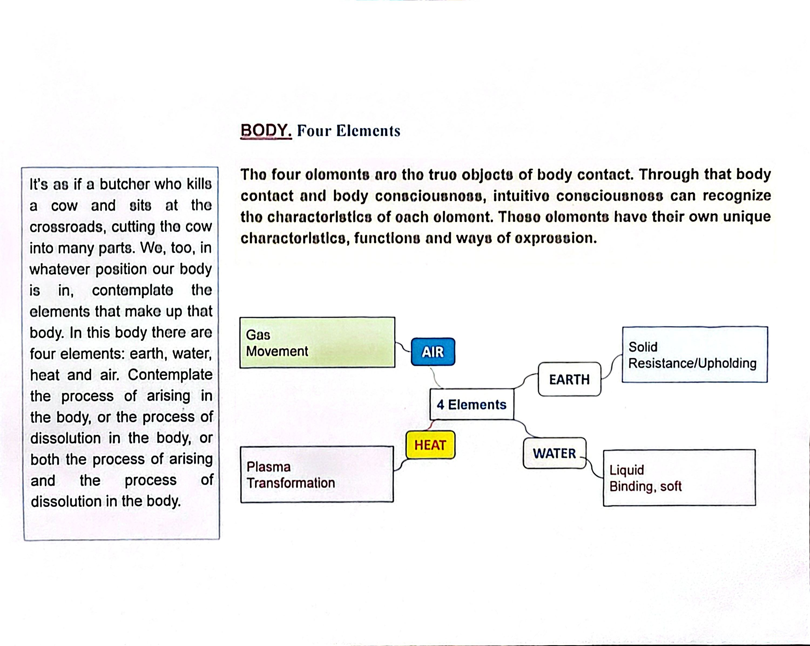
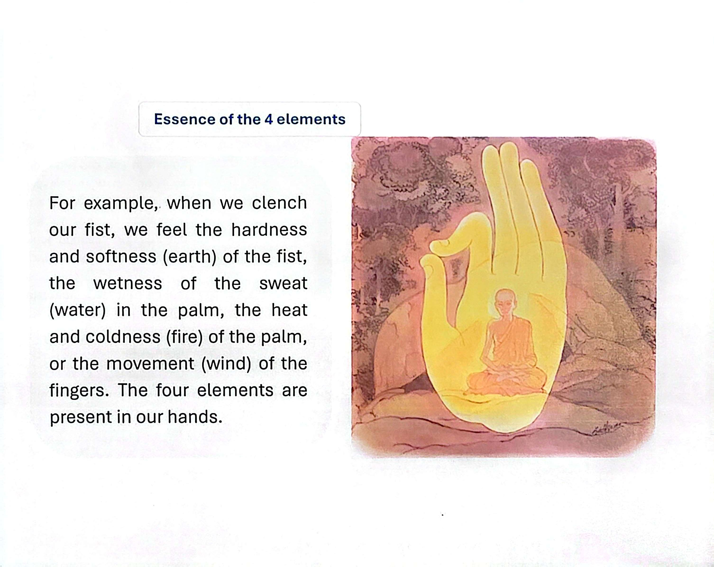

Purpose
The four elements are the true objects of body contact. Through body contact and body consciousness, intuitive consciousness can recognize the characteristics of each element. Each element has its own unique characteristics, functions, and ways of expression.
The Butcher Metaphor
It’s as if a butcher who kills a cow and sits at the crossroads, cutting the cow into many parts. We, too, in whatever position our body is in, contemplate the elements that make up that body. In this body, there are four elements: earth, water, heat, and air.

The Characteristics of the Elements
As described in the "4 Elements" diagram:
- Earth: Solid; characterized by Resistance and Upholding.
- Water: Liquid; characterized by Binding and Softness.
- Heat: Plasma; characterized by Transformation.
- Air: Gas; characterized by Movement.
Arising and Dissolution
The practice involves contemplating the process of arising in the body, the process of dissolution in the body, or both the process of arising and the process of dissolution in the body.
Practical Example: The Fist
We can observe these elements in simple movements. For example, when we clench our fist:
- We feel the hardness and softness (Earth).
- We feel the wetness of the sweat in the palm (Water).
- We feel the heat and coldness of the palm (Heat/Fire).
- We feel the movement of the fingers (Air/Wind).
The four elements are present right here in our hands.

Put it into practice
- Sit in any posture and bring awareness to body contact.
- Direct your intuitive consciousness to the feeling of resistance (Earth).
- Notice the binding quality of fluids or softness (Water).
- Feel the transformation of energy and temperature (Heat).
- Observe the movement of breath and limbs (Air).